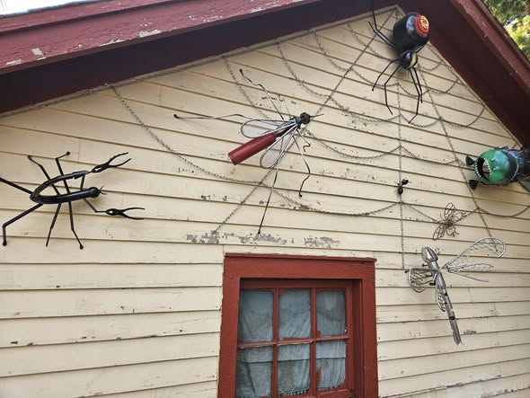
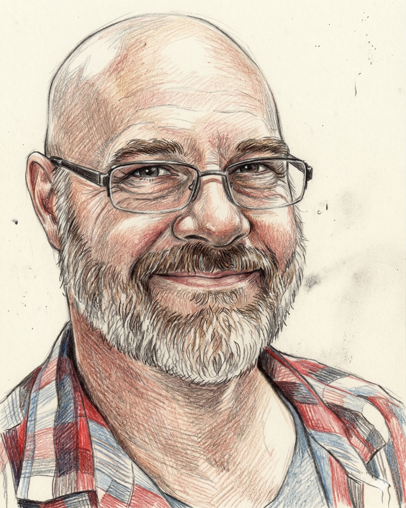

Kelly Glaser has dabbled in many different artforms, but his favorite one is also the most unique. He creates sculptures from scrap metal and other discarded materials. Due to the nature of his medium, every piece ends up being one of a kind.
"I look at my junk pieces and figure it out from there. It's more fun to decide on the way. I always want to try something different."
Glaser, who is a driver for Spee-Dee Delivery, finds a lot of his inspiration along his routes — always on the lookout for new materials, asking to go through scrap bins. People sometimes donate materials in exchange for a finished piece.
"Finding stuff that fits well into the sculpture is the best part. I like to take something that's been used up and has served its purpose and give it some new life."
His sculptures range in size from small lawn decorations to larger statues. The biggest piece he has made is a 6-foot tall robot. He'll usually alternate between larger and smaller pieces to keep variety. Small pieces take around three hours; some projects have run over fifteen hours.




Before he started making sculptures, Glaser studied commercial art at Northern State University and was a tattoo artist for about five years. He took welding classes in high school, spotted a cheap welder on Facebook Marketplace, and the rest is history.
"The first thing I made was a tiny snake, and I built up from there. Although I'm not really a welder — I just make stuff stick together."
Since he started welding, Glaser's yard has gradually become a museum for his work. He sells his pieces at Arts in the Park and other craft fairs throughout the region.